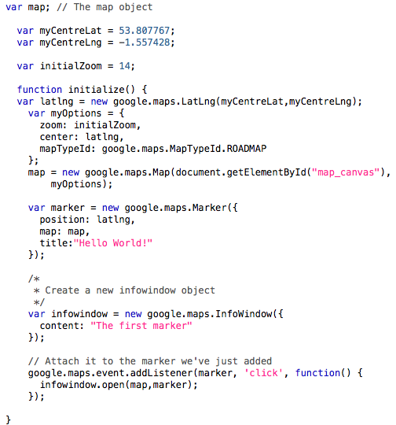
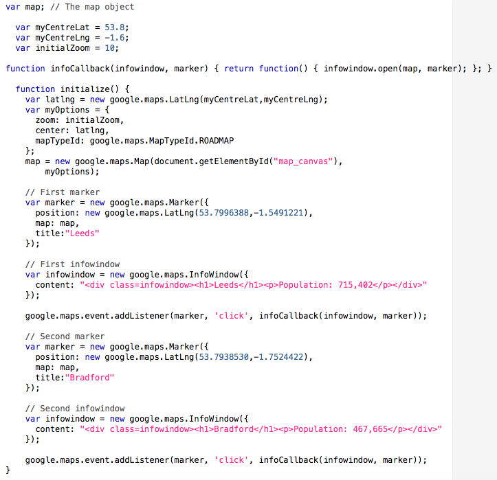

In the previous section, we tidied up the code of our Google Maps example. In this section, we'll make the markers more useful, by adding additional information to the marker. We wish to add a pop-up information window to markers, so that they can tell the user appropriate information.
As described in the introduction to JavaScript, it is an event-driven
language, with event listeners that can trigger various actions (such as
detecting whether a marker has been clicked). There are various event listeners
defined generically in JavaScript; we have already used one of these: the
window.onload() listener, that we have attached to the BODY tag of
the HTML code. Various additional listeners are provided by the Google Maps
API.
The code in the figure below shows how we can add a listener for a click on a marker. The figure
shows a revised map setup file, it should be loaded by an HTML file similar to
those shown in the previous figure (but obviously, with the script
src parameter changed appropriately).

The code in the example can be found HERE.
In this example, we have returned to using a single marker (as we shall soon
see, adding multiple infowindows to multiple markers requires a slightly
revised process...). This is defined and created exactly as before. Two
additional statements are added at the end of the script. Firstly, we declare a
new variable infowindow, as an instance of the object
google.maps.InfoWindow(). When we construct this we can supply a
number of properties, but for this example we use only the 'content' property.
This statement has created an infowindow object, but as yet it is not
associated with a marker (or any events).
The second new statement uses the method
google.maps.event.addListener() to link the infowindow to a
specific marker (the one that we've just created). There are three parameters
that must be set: the object that the listener is linked to (in this example,
the marker variable), the event that is listened for (in this
case, the 'click' event), and a function to call when the event is triggered.
In this case, the function is defined as part of the addListener statement: the
fragment:
function() {infowindow.open(map,marker);}
is included as the third parameter, and it uses the function() method to
define an unamed function that we wish to use. The source code for the function
is placed within curly brackets, and it consists of a single statement:
'infowindow.open(map,marker);'. You will recall that the variable
infowindow (created in the first of the additional statements) is
an instance of the InfoWindow object that is defined as part of the Google Maps
API. This object has a number of defined methods, including the method
open(). This method requires the name of a Map object and,
optionally the name of an object that the infowindow will be placed next to
(usually a Marker object). Note that the first parameter of the addListener()
method identifies the object that needs to be clicked for the function to be
triggered, whilst the second parameter of InfoWindow.open() affects the
placement of the infowindow. Normally these will be the same object - you want
the infowindow to pop up next to the marker that you have clicked.
Clearly, we often want to add more than one marker and more than one infowindow to a map. In order to do so, we have to use an additional step when creating the markers. The following figure shows the map setup code for a map with two markers, each with attached infowindows.

The code for this example can be found HERE.
The first thing to notice is that we
have added an additional function,
infoCallback() is a function whose job it is to create and return
a new function. The function that is created and returned is identical to that
used to open the infowindow earlier, so why the additional step? The answer
lies in the way that functions inherit their environment, and a techical
explanation can be found at: https://developer.mozilla.org/en/JavaScript/Guide/Closures#Creating_closures_in_loops.3a_A_common_mistake,
however the short answer is that if we do not do this, then each marker that we
click will always trigger the last infowindow created.
This code will make a map with two markers. The process for creating each one is the same: a new marker is made, with a position, a map object and a title as before. In this example, we are providing new positions (not the same as the map centre) for each marker.
We then create an infowindow as before. In these examples, the content includes embedded HTML tags, to start to improve the formatting of the infowindow. Note that we have created a division for each window (using the DIV tag) and given this the class 'infowindow'. This will allow us to define styles in CSS that are only used for these windows. At the moment, we have not yet defined any such class in the CSS file, so the window is displayed with the default styling. We have also started to add some information to these windows - namely the populations, although we have not properly cited the source!
The final stage for each infowindow is to attach it to a marker using
addListener(). This is done using the same method as previously,
with the difference that we indicate our new infoCallback()
function is to be used, rather than directly defining a new function. Whilst we
use exactly the same function name for each marker, the crucial difference is
that each new function created via infoCallback() will inherit the
program environment that existed at the time of its creation, including the
'right' instance of the marker variable.